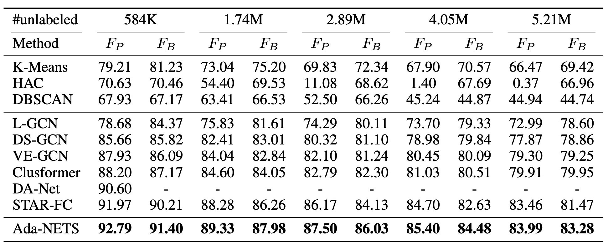
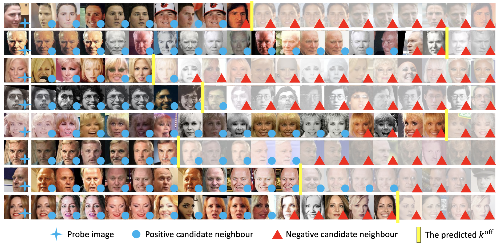
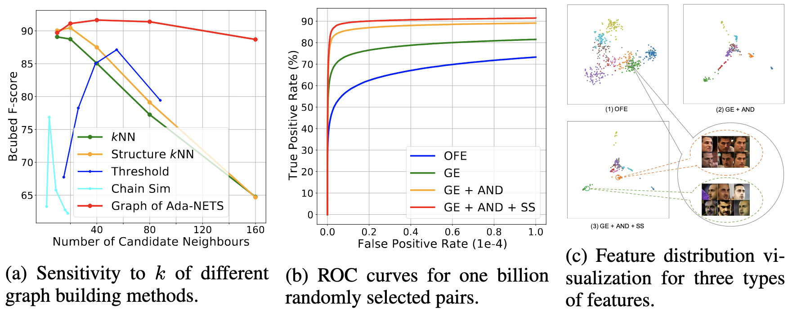

Ada-NETS: Face Clustering via Adaptive Neighbour Discovery in the Structure Space
A novel algorithm named Ada-NETS is proposed to construct the clean graph for GCNs to cluster faces in this paper.
A novel algorithm named Ada-NETS is proposed to construct the clean graph for GCNs to cluster faces in this paper.
Face clustering has attracted rising research interest recently to take advantage of massive amounts of face images on the web. State-of-the-art performance has been achieved by Graph Convolutional Networks (GCN) due to their powerful representation capacity. However, existing GCN-based methods build face graphs mainly according to $k$NN relations in the feature space, which may lead to a lot of noise edges connecting two faces of different classes. The face features will be polluted when messages pass along these noise edges, thus degrading the performance of GCNs. In this paper, a novel algorithm named Ada-NETS is proposed to cluster faces by constructing clean graphs for GCNs. In Ada-NETS, each face is transformed to a new structure space, obtaining robust features by considering face features of the neighbour images. Then, an adaptive neighbour discovery strategy is proposed to determine a proper number of edges connecting to each face image. It significantly reduces the noise edges while maintaining the good ones to build a graph with clean yet rich edges for GCNs to cluster faces. Experiments on multiple public clustering datasets show that Ada-NETS significantly outperforms current state-of-the-art methods, proving its superiority and generalization.
The framework of Ada-NETS. (i) The features are transformed to the structure space to obtain better similarity metrics. (ii) The neighbours of each vertex are discovered by an adaptive filter. (iii) A graph is built with the neighbour relations discovered by (ii) and the graph is used by the GCN model to classify vertex pairs. The final clustering results are obtained using embeddings from GCNs to link vertex pairs with high similarities.
The framework of Ada-NETS. The noise edges problem in GCN-based face clustering. Different shapes in figures represent different classes. (a) Face images to be clustered.(b) Noise edges are introduced when constructing graphs based on naïve kNN. (c) Connecting edges by feature distance may lead to noise edges. (d) The existing ``One-size-fits-all" solution using a fixed number of neighbours for each vertex introduces many noise edges.
Face clustering performance with different numbers of unlabeled images on MS-Celeb-1M.
Random examples of top 20 images ranked by the similarity with probe images with the predicted k_off.
Analysis of Ada-NETS. (a) The sensitivity of clustering to $k$. Ada-NETS maintains a stable and outstanding performance. (b) The ROC curves on MS-Celeb-1M part_1. All embedded features have better ROC performances than the original feature embedding, and the graph embedding output by GCN with the help of AND and SS has the best performance. (c) Feature distribution visualization for three types of features: original feature embedding (c.1), graph embedding of GCN with the adaptive neighbour discovery strategy in the original space (c.2) and structure space (c.3).
 @inproceedings{wang2022adanets,
title={Ada-{NETS}: Face Clustering via Adaptive Neighbour Discovery in the Structure Space},
author={Yaohua Wang and Yaobin Zhang and Fangyi Zhang and Senzhang Wang and Ming Lin and YuQi Zhang and Xiuyu Sun},
booktitle={International Conference on Learning Representations},
year={2022},
url={https://openreview.net/forum?id=QJWVP4CTmW4}
}
If you are interested in AIGC, especially digital humans and video generation, and are eager to take on exciting challenges, then this is the place for you. We are looking for talented, motivated and creative individuals to join our team. If you are interested, please send your CV to Yaohua.